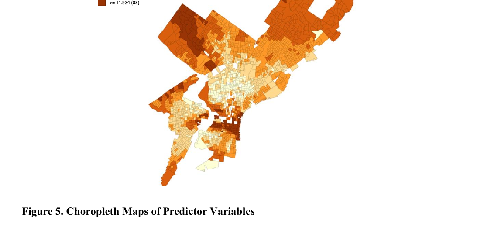
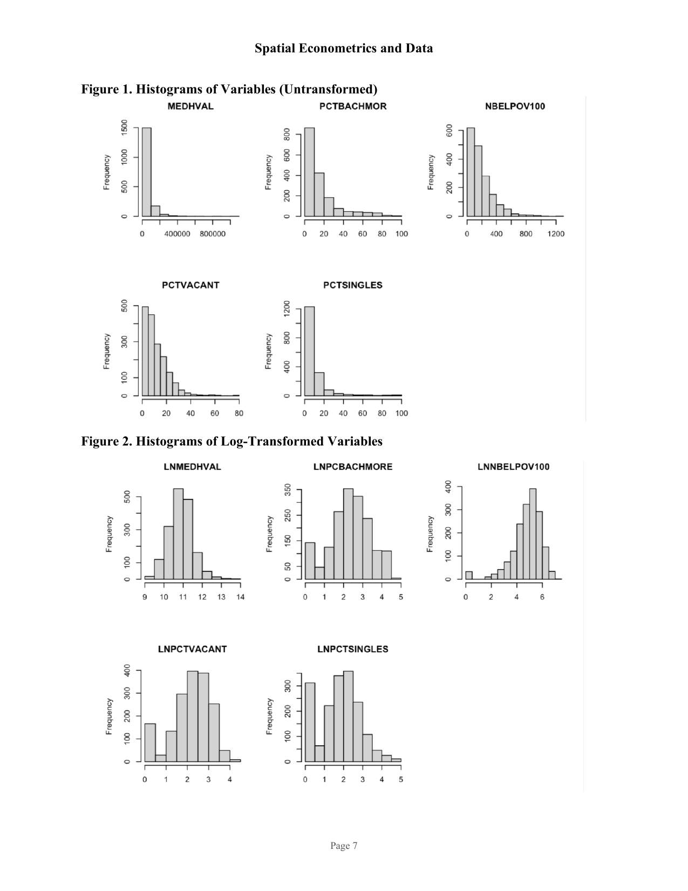
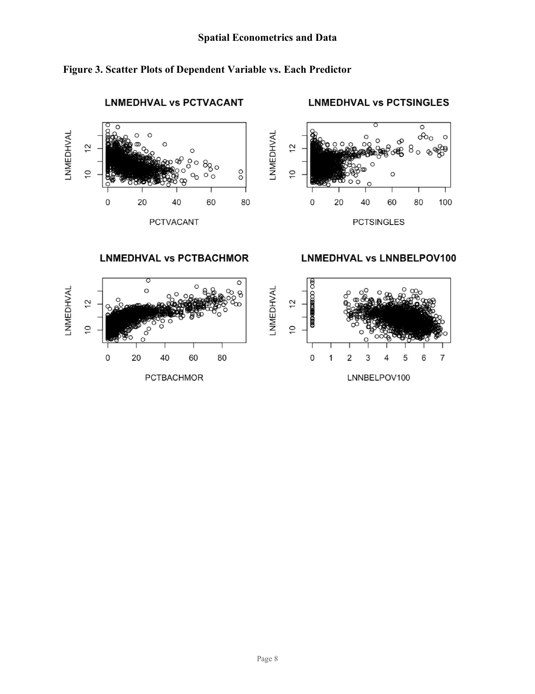
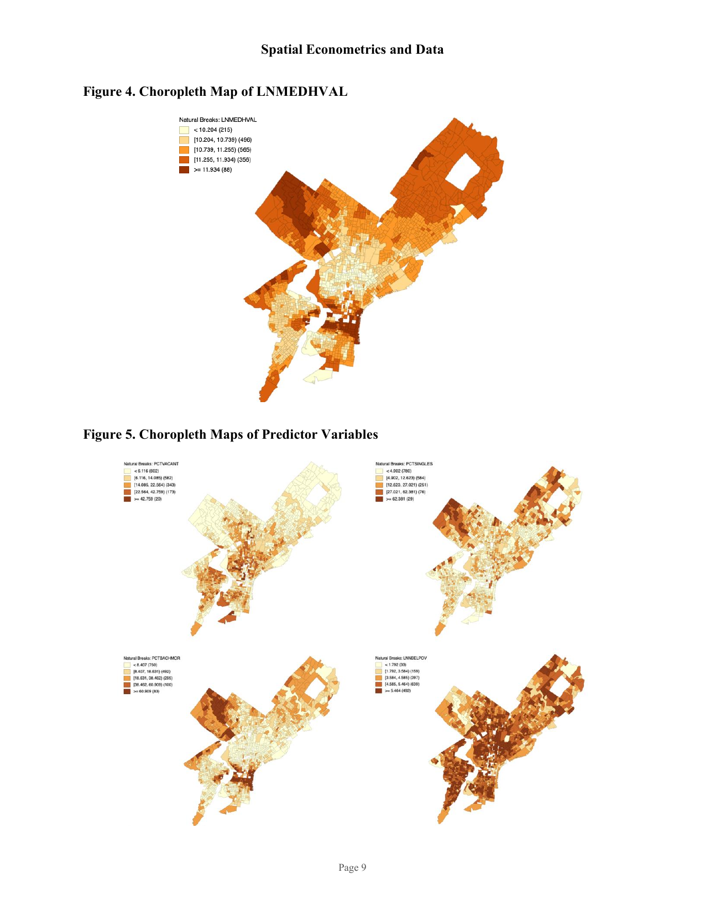
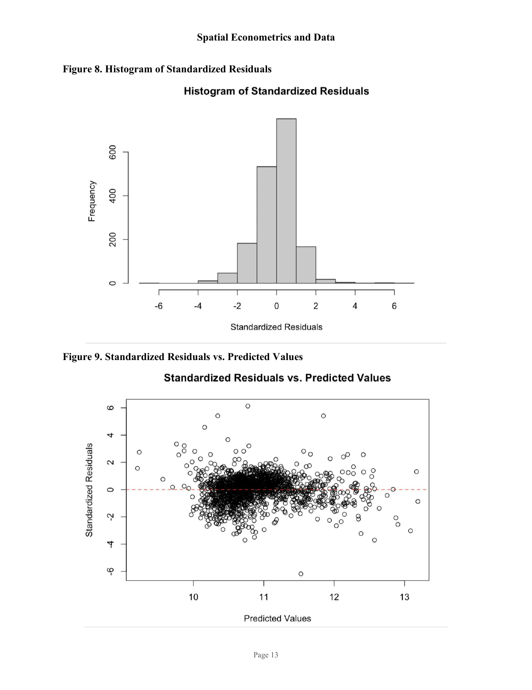

Research · Spatial Econometrics
An OLS regression study modelling how neighbourhood-level socioeconomic conditions shape residential property values across 1,720 Census block groups.
Overview
Residential property values are shaped by more than the physical attributes of individual housing units — they reflect the broader socioeconomic character of the neighbourhoods in which they sit. This study examines what drives spatial variation in median house values across Philadelphia, Pennsylvania, using Census block group data and Ordinary Least Squares regression.
Philadelphia presents a compelling setting: stark spatial disparities in socioeconomic conditions are well-documented across its metropolitan area, making it a natural laboratory for hedonic pricing analysis. The dataset was cleaned from 1,816 to 1,720 block groups by removing underpopulated areas, blocks with no housing units, and one anomalous outlier in North Philadelphia with implausibly high house values relative to extremely low household income.
Following hedonic pricing theory — which posits that house prices bundle structural, locational, and neighbourhood-level attributes — the model regresses log-transformed median house value (LNMEDHVAL) on four neighbourhood predictors: vacancy rate, single-family housing share, educational attainment, and log poverty count. All statistical analysis was conducted in R; choropleth maps were produced in GeoDa.
Model
OLS Regression Equation
Findings
Educational Attainment (PCTBACHMOR)
The strongest positive predictor. A one percentage point increase in the share of residents holding a bachelor's degree or higher is associated with a 2.09% increase in median house value, holding all else constant. Reflects the well-documented relationship between neighbourhood human capital and housing demand.
Strongest positive effectVacancy Rate (PCTVACANT)
The largest negative predictor. Each additional percentage point of vacant housing is associated with a 1.92% decrease in median house value. High vacancy signals disinvestment and neighbourhood decline — consistent with legacy-city dynamics particularly evident in north-central Philadelphia.
Largest negative effectPoverty Concentration (LNNBELPOV100)
Interpreted as an elasticity — since both the outcome and this predictor are log-transformed, a 1% increase in the number of households below the poverty line is associated with a 0.079% decrease in median house value. Aligns with hedonic pricing theory: areas with concentrated poverty command lower property values.
Log-log elasticitySingle-Family Housing Share (PCTSINGLES)
A weak positive effect. Each percentage point increase in detached single-family housing units is associated with a 0.30% increase in median house value. Less intuitive in a dense urban context, but may reflect the premium that single-family homes command over multi-family typologies even within Philadelphia.
Weak positive effectFigures
Fig 1 & 2 — Histograms

Untransformed variables (top) show pronounced right skew. Log transformation of MEDHVAL produces an approximately normal distribution centred around 11, justifying its use as the dependent variable.
Fig 3 — Scatter Plots

PCTBACHMOR exhibits the most visibly linear relationship with LNMEDHVAL. PCTVACANT and LNNBELPOV100 show non-linear patterns — a potential violation of the linearity assumption revisited in the limitations section.
Fig 4 & 5 — Choropleth Maps

Clear spatial clustering: highest house values in the northwest and northeast; lowest in north-central Philadelphia where vacancy and poverty are most concentrated. The mirrored spatial distributions suggest positive spatial autocorrelation.
Fig 8 & 9 — Residual Diagnostics

The residual histogram is approximately bell-shaped, supporting the normality assumption. The residuals-vs-fitted plot shows mild heteroscedasticity — wider spread at lower predicted values — and several extreme outliers beyond ±3.
Limitations
Non-linearity. Scatter plots of PCTVACANT and LNNBELPOV100 against LNMEDHVAL show non-linear patterns, indicating a partial violation of the OLS linearity assumption. Polynomial or spatial regression methods may be more appropriate.
Spatial autocorrelation. Choropleth maps of both the dependent variable and predictors show clear geographic clustering, suggesting that nearby block groups share unmeasured characteristics. This likely violates the OLS independence-of-observations assumption and calls for spatial regression techniques (e.g. spatial lag or spatial error models).
Mild heteroscedasticity. Residual variance appears somewhat wider at lower fitted values, which can produce inefficient coefficient estimates and unreliable standard errors. Future work should explore robust standard errors or weighted regression.